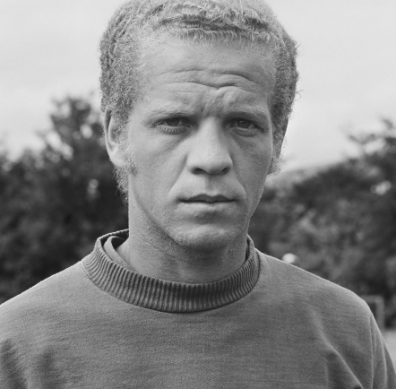
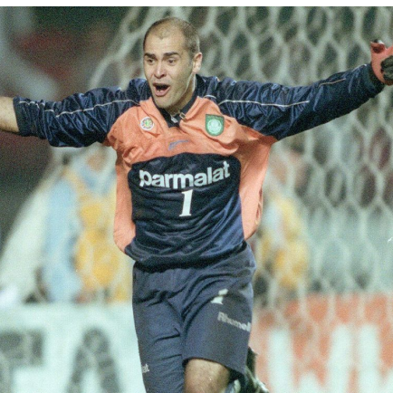
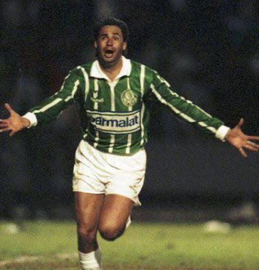
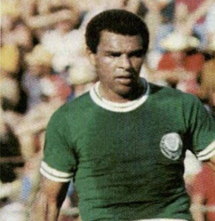
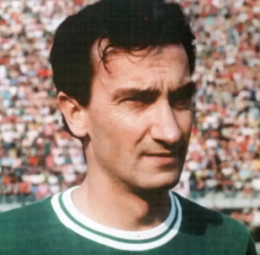
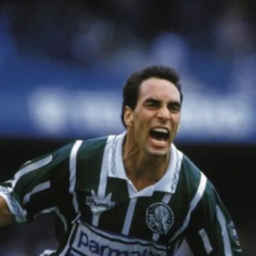
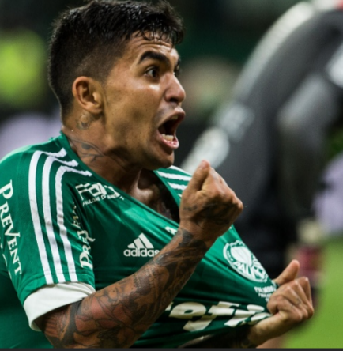
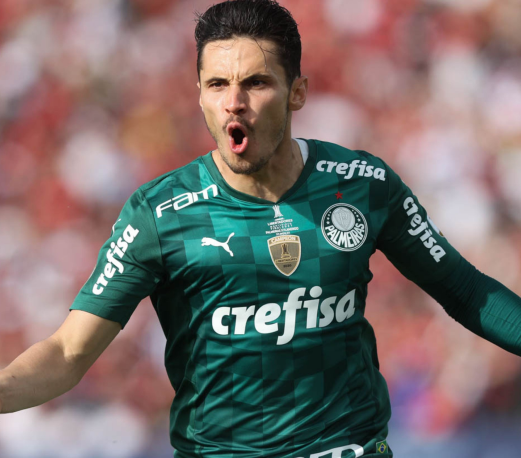

Palmeiras
O Palmeiras surgiu no dia 26 de agosto de 1914. Fundado por imigrantes italianos, seu primeiro nome foi Società Sportiva Palestra Italia. Em 1942, quando estava estabelecida como uma força do futebol paulista, a equipe foi obrigada a trocar de nome, passando a se chamar Sociedade Esportiva Palmeiras em decorrência da Segunda Guerra Mundial. O Palmeiras foi campeão paulista logo em sua primeira partida com o novo nome. Foram, ao todo, 22 títulos estaduais. Um dos times mais famosos da história do clube alviverde foi o chamado de "Academia de Futebol", das décadas de 1960 e 70, liderado por Ademir da Guia - um dos poucos elencos que faziam frente ao Santos de Pelé.
Títulos
Campeonato Brasileiro: 10
Copa Rio Internacional: 1
Copa Libertadores da América: 3
Campeonato Paulista: 24
Copa do Brasil: 4
Rio-São Paulo: 5

Ídolos
- 
- 
- 
- 
- 
- 
- 
- 
Ademir da Guia
"Poucos jogadores na história do futebol foram tão talentosos ao unir perfeitamente classe e poder de decisão como Ademir da Guia. E menos jogadores ainda se identificaram tanto com um único clube como ele. A elegância, o ritmo cadenciado, as passadas largas, a visão de jogo, a habilidade com a bola nos pés e a capacidade de conquistar os mais variados troféus ao longo de 16 temporadas vestindo a camisa verde conduziram este carioca, nascido no emblemático ano de 1942, ao altar dos ídolos eternos do Palmeiras. Filho de Domingos da Guia, notável zagueiro das décadas de 30 e 40, o Divino (adjetivo que herdou de seu pai) deu seus primeiros chutes ainda menino no Rio de Janeiro, cresceu com o uniforme do Bangu e encontrou o Palmeiras pela primeira vez na adolescência, aos 18 anos de idade. Em um amistoso disputado em setembro de 1960, no Pacaembu, o jovem meio-campista de vermelho e branco chamou a atenção mesmo com a vitória palestrina por 4 a 0. Tanto que aquela seria a primeira e única que vez que Ademir e Palmeiras estariam de lados opostos."
Marcos
Marcos veio do interior sem alarde para jogar no Sub-20 e ficou anos na reserva do time profissional antes de, como um supersônico em ascensão, conduzir o Palmeiras ao inédito título da Libertadores de 1999 e representar o Verdão na conquista da Copa do Mundo de 2002. Mais do que isso: em tempos em que atuar na Europa virou quase uma obsessão dos jogadores brasileiros, os 20 anos de dedicação exclusiva ao clube de coração fez dele o grande ídolo de uma geração, canonizado e reverenciado em procissão ao pendurar as luvas. Tornou-se o “São Marcos de Palestra Italia”.
Evair
Evair, o “Matador”, ganhou este apelido pelo seu faro de gol. Era um atacante clássico, de passadas elegantes e excelente visão de jogo. Em 1993, fez dois gols na vitória palmeirense sobre o rival Corinthians por 4 a 0, na final do Campeonato Paulista, e ficou marcado como principal símbolo da quebra do jejum alviverde de 16 anos sem conquistas. Em 1999, no jogo da final da Libertadores da América, Evair também não passou em branco e balançou a rede do Deportivo Cali-COL, garantindo a disputa do título nos pênaltis.
Luis Pereira
Nascido na baiana Juazeiro, terra dos músicos João Gilberto e Ivete Sangalo, Luís Pereira fez a torcida palmeirense cantar e vibrar como nenhum outro jogador de defesa. O eterno camisa 3 é o maior zagueiro-artilheiro da história do clube, com 36 gols marcados em duas passagens pelo Verdão (de 1968 a 1975 e de 1981 a 1984). Como se não bastasse, ele ajudou o Maior Campeão do Brasil a conquistar três títulos nacionais (1969, 1972 e 1973) e dois Paulistas (1972 e 1974), além do tricampeonato do prestigiado Troféu Ramon de Carranza, na Espanha (1969, 1974 e 1975), entre outras taças.
Dudu
Aguerrido, brigador e preciso no desarme, Dudu protegia a zaga alviverde como um gladiador incansável. Foi assim que, em 12 temporadas, tornou-se o terceiro jogador que mais entrou em campo na história do Palmeiras com mais de 600 jogos. Também se sagrou tricampeão paulista, pentacampeão brasileiro (feito que só ele e Ademir da Guia alcançaram pelo Verdão), disputou a Copa de 1974 na Alemanha, conquistou um título como técnico e foi imortalizado, em 2016, com um dos seis bustos de bronze que hoje ornam a sede social do clube.
Edmundo
Atacante habilidoso e temperamental, foi apelidado de “Animal”. Dentro e fora de campo, causava problemas com seu gênio explosivo. Foi essencial na conquista do Rio-São Paulo de 1993 com dois gols na decisão e peça fundamental na equipe que quebrou o jejum de títulos no mesmo ano na final do Campeonato Paulista. Caiu nas graças da torcida por defender as cores do clube com valentia. Fintas rápidas, visão de jogo, passes precisos e ótima finalização eram algumas das características de seu jogo..
Dudu
Nascido em Goiânia, Goiás, Dudu, iniciou sua carreira em 2001 nas categorias de base do Atlético Goianiense, onde venceu tudo que disputou pelo clube, saindo em 2005 para uma breve temporada no clube amador Ovel, ficando um curto período e já indo para o Cruzeiro fazer teste na categoria de base, onde foi aprovado e já contratado pelo clube mineiro.
Veiga
Ao todo, Veiga tem 193 partidas e 61 gols feitos. Além disso, leva consigo as conquistas dos Campeonatos Paulistas (2020 e 2022), Libertadores (2020 e 2021), Copa do Brasil (2020) e a Recopa Sul-Americana (2022). Além disso ele também é o maior artilheiro do Palmeiras na história da Libertadores, somando 14 gols, empatado com Rony, em seguida vem o meia Alex com 12 gols.
Alianz Park
Moderno e imponente, o Allianz Parque é a principal arena multiuso da América Latina. Localizada no coração de São Paulo, maior metrópole do continente, no mesmo solo que por mais de 100 anos abrigou o Parque Antarctica e, posteriormente, o Estádio Palestra Italia, a casa do Palmeiras foi reinaugurada em 2014 como um marco do centenário do clube e hoje é um dos grandes orgulhos da torcida alviverde.
Torcida
O movimento das torcidas organizadas, institucionalizado em São Paulo a partir de 1969, tornou-se uma marca nos estádios ao alterar muitos elementos da cultura torcedora. O objetivo deste estudo é apresentar a trajetória das duas principais entidades de torcedores da Sociedade Esportiva Palmeiras: a TUP (Torcida Uniformizada do Palmeiras), criada em 1970, e que congregou a maioria dos torcedores organizados alviverdes até metade da década seguinte, e a Mancha Verde, que concentrou a maioria dos torcedores palmeirenses a partir dos anos 1990.